This tutorial describes how to abort existing process instance and join it to the active process instance. Also, check whether the documents attached to the source process instance are copied in the target process instance.
In an organization process instances are document-centric. To complete each process instance, operators have to merge documents from one process instance to another process instance. This involves downloading the documents locally, uploading them to the appropriate process instances and aborting the existing process instances. So, the organization has requested an enhancement to the existing functionality. For detail scenario refer to the Common Usage Pattern section of the Aborting and Joining Processes chapter of the Concepts handbook.
For details on the abort and join functionality, refer to Aborting and Joining Processes chapter of the End User Handbook.
This tutorial covers the following:
So, let's abort Verification Check - 1 process and join it to another process instance. Also, we need to check that newly joined process instance contains the document and the linking is established after the abort and join operation.
Use the provided AbortJoin example model which contains key descriptors named TaxID, LastName and Name, appropriate declarative security to abort the process instance and its processes also support attachments.
managing-unstructured-workflow:
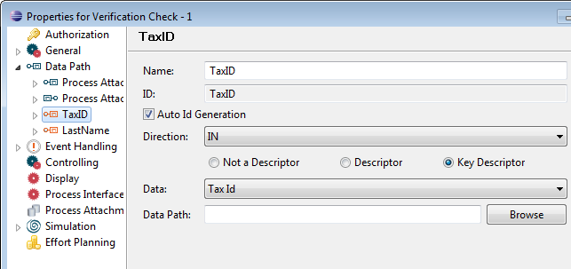
Figure: Key Descriptor of process Verification Check - 1
For more information on key descriptors, please refer to the Key Descriptors section of the Working with Data Paths chapter of the Modeling Guide.
Perform the following steps to deploy the model and run the project in the Stardust Portal:
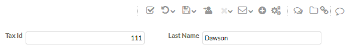
Figure: Enter Tax ID and Name
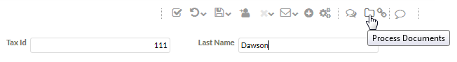
Figure: Upload Document
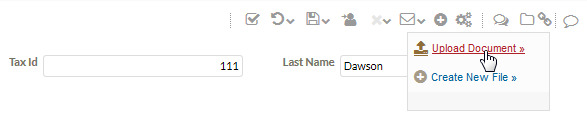
Figure: Upload Document
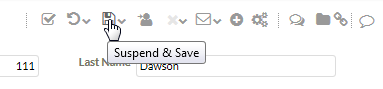
Figure: Suspend and Save
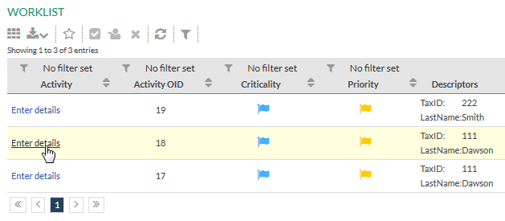
Figure: Worklist - Activate Activity with Same Tax ID and Last Name
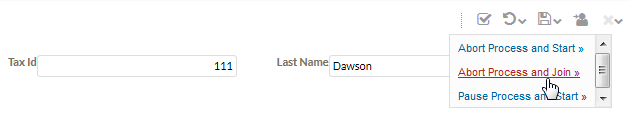
Figure: Abort and Join
The active process instances with matching key descriptors are displayed in the search.
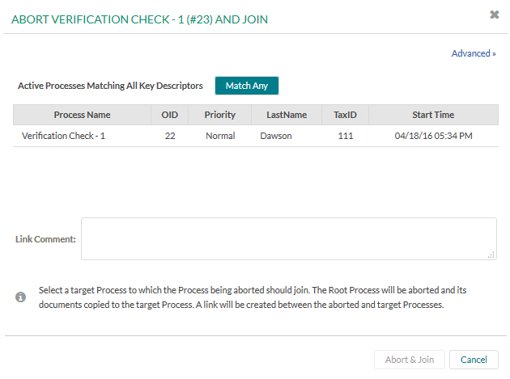
Figure: Active Processes Matching All Key Descriptors
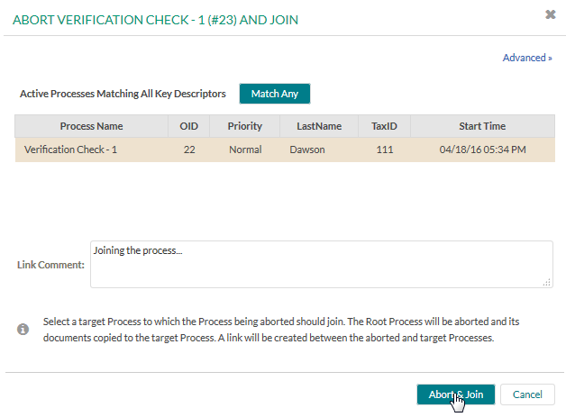
Figure: Abort and Join
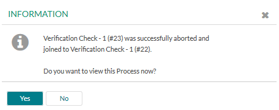
Figure: Abort and Join - Confirmation Dialog
The process details of the joined process instance get displayed.
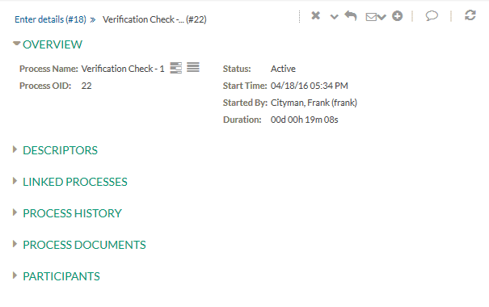
Figure: Process Details of Joined Process
Figure: Linked Process
The link to the source process instance gets displayed.
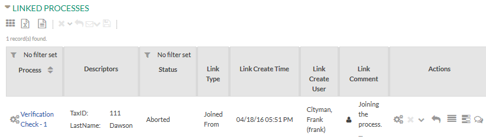
Figure: Linked Process - Source Process
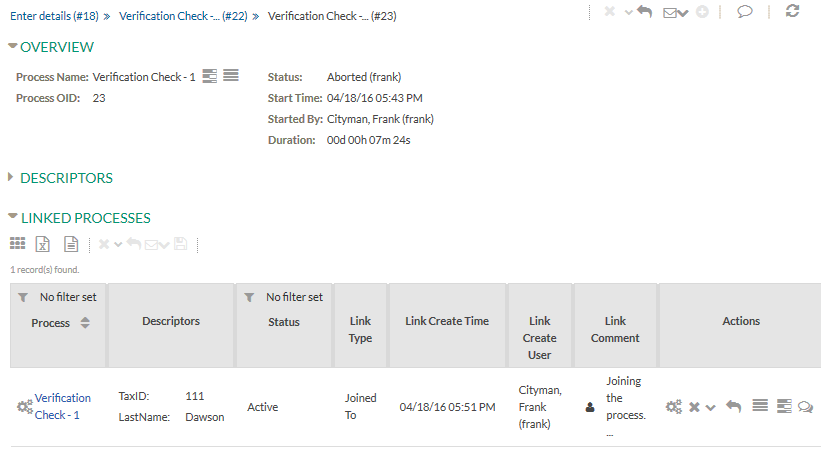
Figure: Linked Process - Target Process
Expand the Process Documents panel of the newly joined target process.
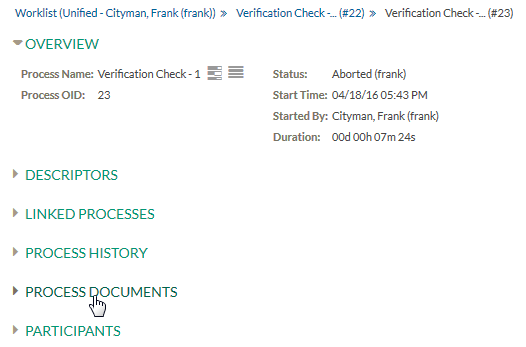
Figure: Process Document - Target Process
The document from the source process instance gets copied to the target process instance. For more information, please refer to the Data Copy Semantics section of the Aborting and Joining Processes chapter of the Concepts handbook.
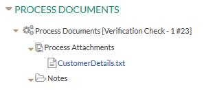
Figure: Attached Document to Target Process
Expand the Process History panel of the newly joined target process.
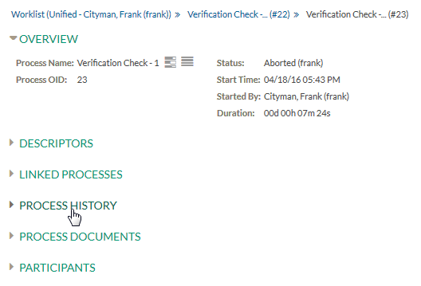
Figure: Process History - Target Process
Note that in the process history of the target process, details of the source process are not displayed.
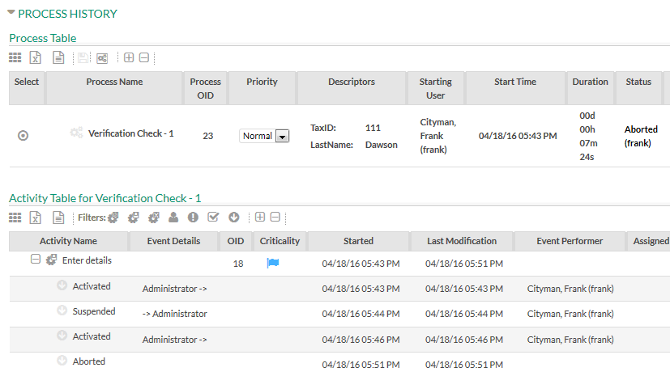
Figure: Target Process History
Similarly, if you open the process history of the source process, the process history of the target process is not shown.